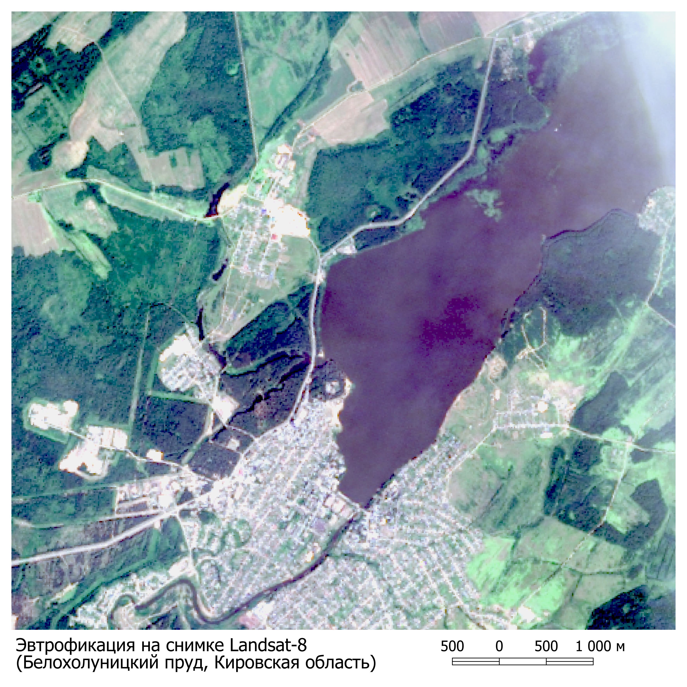

Пожар близ с.Шелопугино
Этот снимок был сделан спутником и показывает состояние экологической зоны. Данные снимки помогают ученым анализировать и отслеживать изменения в экосистемах.

Пожар близ пос.Хани
Этот снимок помогает ученым анализировать и отслеживать изменения в экосистемах.
Пожар в районе Муйский
Снимок показывает состояние экологической зоны и помогает анализировать изменения в экосистемах.

Пожар близ с.Дабан
Данный снимок позволяет отследить изменения в экосистемах и выявить проблемные зоны.

Пожар близ с.Дабан
Данный снимок позволяет отследить изменения в экосистемах и выявить проблемные зоны.